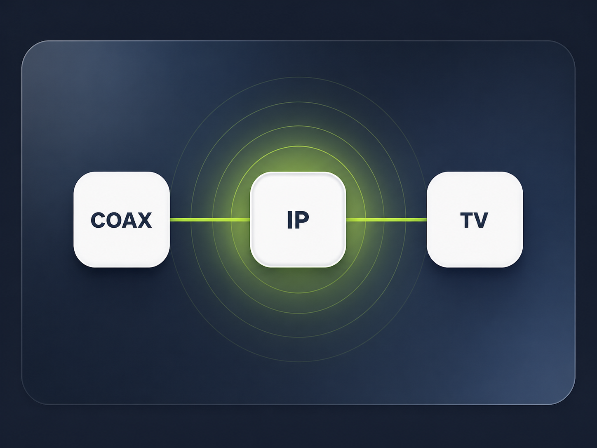
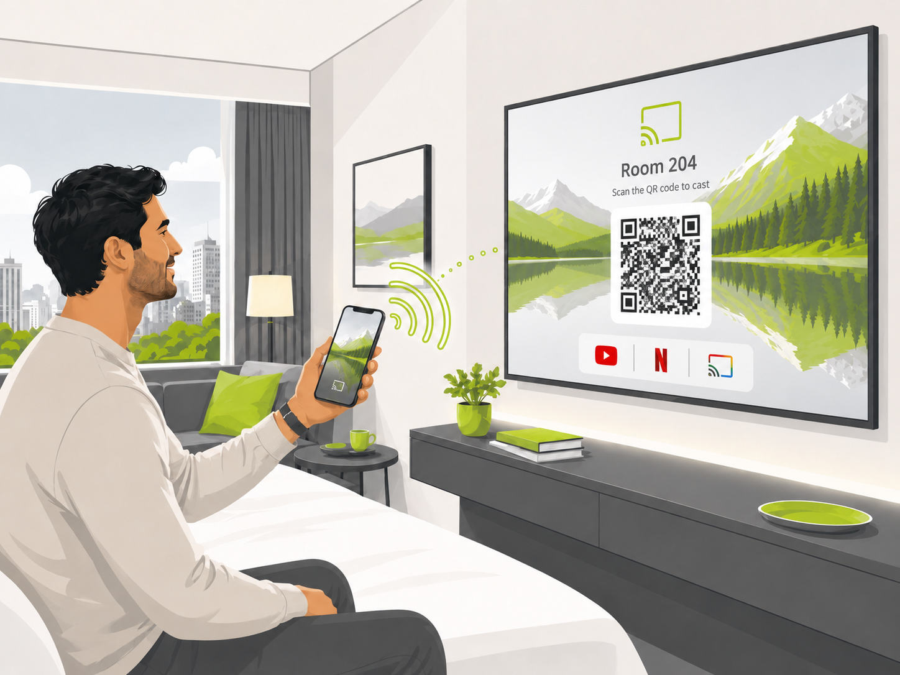

TV channel streams over IP professionali per hotel
Canali internazionali adatti al vostro mix di ospiti
Strutturato con eleganza. Orientato a livello internazionale. Tecnicamente ben progettato.
Scegliete tra Basic con 80 canali, Essential con 120 canali e Max con oltre 250 canali. L’offerta è completata dal supporto svizzero e dalla possibilità di integrare direttamente nella pianificazione il casting/BYOD e l’infrastruttura esistente.
Attualmente disponibili: oltre 250 canaliBasic · Essential · MaxVero channel finderCasting come estensione
Pacchetti chiaramente differenziati
Non solo più canali – ma profili ospiti chiaramente definiti
I pacchetti non si differenziano soltanto per quantità, ma soprattutto per struttura degli ospiti, aree linguistiche e scenario d’uso in hotel.
Basic
I principali mercati di provenienza
CHF 4.50
per TV / mese
80
- Mercati principali: Svizzera ed Europa
- Tedesco, francese, italiano e inglese
- Canali svizzeri inclusi
- Copertura base spagnola e portoghese
- Compatto e conveniente
Svizzera 10Tedesco 15Francese 10Italiano 10Inglese 15Spagnolo 10Portoghese 10
Basic – Per hotel con ospiti prevalentemente svizzeri ed europei.
Scelta consigliata
Essential
Lo standard alberghiero internazionale
CHF 5.50
per TV / mese
120
- Ampia copertura europea e internazionale
- Più canali in tutte le lingue principali
- Ulteriori aree linguistiche internazionali
- Canali arabi e primi canali dell’Europa orientale inclusi
- Ideale per la maggior parte degli hotel
Svizzera 10Tedesco 20Francese 15Italiano 15Inglese 15Spagnolo 5Portoghese 10Arabo 10Ucraino 4Russo 2
Essential – Lo standard internazionale per la maggior parte degli hotel.
Max
Per ospiti da tutto il mondo
CHF 6.50
per TV / mese
250+
- Lista canali completa attuale
- Massima varietà linguistica
- Copertura estesa dell’Europa orientale
- Ideale per strutture internazionali e contesti specializzati
- Base forte per strutture con ospiti molto eterogenei
Tutti i 10 gruppi linguistici inclusiArabo completoUcraino completoRusso completoDimensione pacchetto 250+
Max – Per resort, business hotel internazionali, cliniche e hotel con mercati di provenienza molto diversificati.
Calcolatore costi interattivo
Quanto costa il pacchetto canali per il vostro hotel?
Selezionate il numero di camere e il pacchetto. Il calcolatore mostra in modo trasparente i costi mensili e annuali. I costi una tantum per hardware, installazione e configurazione vengono calcolati in base al progetto.
Pacchetto canali
Valore indicativo IVA esclusa e senza costi una tantum per hardware, installazione e configurazione.
Essential
Costo mensileCHF 550.00
Costo annualeCHF 6'600.00
Prezzo per TV e meseCHF 5.50
canali inclusi120
Richiedi verifica infrastruttura9. Ricerca canali
Ricerca canali
Trova i canali giusti in pochi secondi – per pacchetto, lingua, paese, categoria, HD/SD o nome del canale.
·
Requisiti tecnici
Una connessione IP stabile presso l’Hotel TV
I canali TV over IP richiedono una connessione di rete affidabile in ogni camera, direttamente presso o vicino al televisore.
Connessione LAN al TV
Idealmente è disponibile una connessione LAN funzionante dietro o accanto all’Hotel TV.
Rete hotel stabile
Switch, VLAN, banda e struttura di rete devono garantire un funzionamento TV affidabile.
Hotel TV compatibili
Modello, età e compatibilità tecnica degli apparecchi esistenti vengono verificati in anticipo.
Nessuna LAN in camera?
IP over Coax utilizza il cablaggio TV esistente
Se un cavo coassiale arriva già in camera, spesso può essere riutilizzato come moderna connessione IP. In questo modo si evitano nuovi cavi LAN, polvere, rumore e lunghi periodi di indisponibilità delle camere.
- Riutilizzo intelligente del cablaggio coassiale
- Molti meno lavori edili
- Implementazione rapida durante l’attività
- Adatto a IPTV, casting e altri servizi IP

11. Casting come estensione intelligente
Canali TV più casting/BYOD – la combinazione logica
I canali internazionali coprono il bisogno di base di programmi familiari. L’esperienza in camera diventa ancora più forte quando gli ospiti possono trasmettere in sicurezza i propri contenuti sul TV.
Canali TV più casting/BYOD – la combinazione logica
I canali internazionali coprono il bisogno di base di programmi familiari. L’esperienza in camera diventa ancora più forte quando gli ospiti possono trasmettere in sicurezza i propri contenuti sul TV.
Su richiesta Hotelinnovativ combina i canali TV over IP con casting/BYOD, hotel TV e un’infrastruttura di rete stabile o IP-over-Coax.

Portare Netflix, YouTube e contenuti personali dal device dell’ospite al TV dell’hotelEstensione sensata per moderni business hotel e leisure hotelCombinazione tecnica pulita con IPTV, hotel TV e infrastruttura di rete
Una soluzione, più moduli
Streaming canali TV
Pacchetti internazionali e logica pacchetti chiara.
IPTV
Hospitality TV, menu e gestione centralizzata.
Casting / BYOD
Portare contenuti personali sul TV dell’hotel in sicurezza.
Rete
Infrastruttura stabile per un funzionamento affidabile.
LAN o IP over Coax
La connessione giusta fino al TV.
Supporto & implementazione
Dall’analisi all’esercizio continuo
Oltre alla distribuzione dei canali supportiamo anche SLA, implementazione e la giusta strategia infrastrutturale.
Support Basic
Support Basic
- Supporto dal lunedì al venerdì
- Supporto telefonico e tecnico
- Analisi remota e troubleshooting
- Supporto per impostazioni canali e sistema
- Referente svizzero
Adatto a hotel con organizzazione tecnica propria o fabbisogno di supporto contenuto.
Support 7/24
Support 7/24
- Supporto 24/7
- Weekend e festivi inclusi
- Tempi di risposta rapidi
- Gestione escalation per guasti critici
- Referente locale svizzero
Adatto a hotel, resort, cliniche e strutture con alte esigenze di disponibilità.
Svolgimento del progetto
Dal check dell’infrastruttura a un esercizio stabile in cinque fasi chiare
Dalla prima analisi all’esercizio stabile, seguiamo un percorso chiaro con orientamento tecnico e commerciale.
1
Verifica infrastruttura
Analisi di LAN, TV, COAX e degli hotel TV esistenti.
2
Definizione del pacchetto
Definire insieme pacchetto, lingue e priorità.
3
Scelta della soluzione tecnica
Connessione LAN diretta oppure IP over Coax se necessario.
4
Messa a disposizione dei canali
Preparare centralmente gli stream e inserirli nella rete dell’hotel.
5
Messa in sicurezza dell’esercizio
Definire il modello di supporto e stabilizzare l’operatività.
Hotelinnovativ
Partner tecnologico per hotel e sanità da oltre 20 anni
Hotelinnovativ AG affianca hotel e strutture sanitarie in Svizzera da oltre 20 anni con soluzioni concrete per hospitality TV, IPTV, casting/BYOD, rete, digital signage e guest journey. Riuniamo consulenza, tecnica, implementazione e supporto da un unico partner.
01
Oltre 20 anni di esperienza sul mercato
02
Progetti e supporto in tutta la Svizzera
03
Hospitality TV, IPTV, casting, rete e guest journey
04
Consulenza personale con referente locale
Hotelinnovativ AG
Hotelinnovativ AG affianca hotel e strutture sanitarie in Svizzera da oltre 20 anni con soluzioni concrete per hospitality TV, IPTV, casting/BYOD, rete, digital signage e guest journey. Riuniamo consulenza, tecnica, implementazione e supporto da un unico partner.
Referenze & segnali di fiducia
Esperienza hospitality dalla Svizzera
Da oltre 20 anni Hotelinnovativ affianca hotel e strutture sanitarie nei progetti TV, IPTV, rete e Guest Journey.
Domande frequenti
Risposte brevi
Le domande principali, in sintesi.
Qual è la differenza tra Basic, Essential e Max?
I pacchetti si distinguono sia per il numero di canali sia per i gruppi linguistici e di paesi inclusi.
Posso cercare canali specifici?
Sì. Il channel finder filtra per pacchetto, lingua, paese, categoria, HD/SD e nome del canale.
Ogni camera deve avere una presa LAN?
Sì. Per i canali TV over IP è necessaria una connessione IP funzionante presso il TV. Se manca la LAN, IP over Coax può spesso essere un’alternativa valida.
È possibile integrare il casting?
Sì. Il casting/BYOD può essere integrato come estensione utile.
Canali e lingue sono personalizzabili?
Sì. In base al profilo ospiti si possono definire insieme priorità, pacchetti e canali aggiuntivi.
Richiedi un’analisi gratuita
Quale soluzione TV è adatta al vostro hotel?
Analizziamo insieme infrastruttura, numero di camere, mondi canale, priorità linguistiche, necessità di supporto e possibili estensioni come casting o IP over Coax.